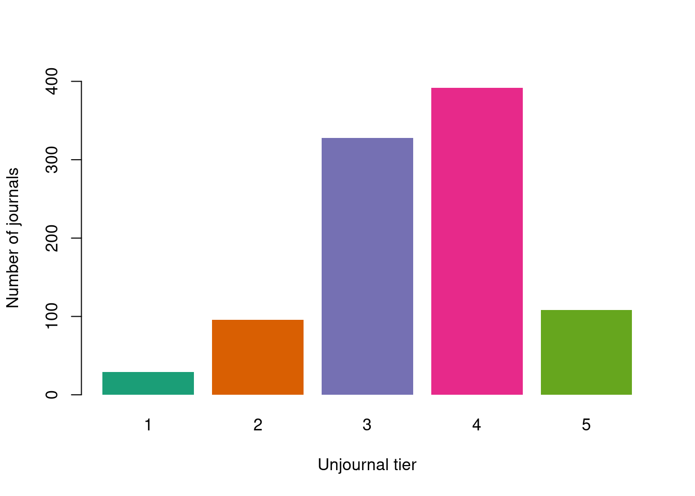

| Dimension | Krippendorff's Alpha |
|---|---|
| overall | 0.0794 |
| adv_knowledge | -0.16 |
| methods | -0.0802 |
| logic_comms | 0.00355 |
| real_world | -0.177 |
| gp_relevance | 0.112 |
| open_sci | -0.346 |
| journal_predict | 0.256 |
| merits_journal | 0.18 |
3 A first look at Unjournal’s data
The Unjournal is an organization aiming to change how scientific research is evaluated. We carry out journal-independent evaluation of research papers.
We capture data from our evaluations, including quantitative measures of paper quality on different dimensions. One of our goals is to use this data to learn about the evaluation process. Right now, we have only a few dozen evaluations in the data, so this note just describes some things we can do in future, and shows the code as a proof of concept.
4 About the data
Papers1 can be suggested for evaluation either by Unjournal insiders, or by outsiders. The Unjournal then selects some papers for evaluation. I won’t focus on the details of this process here. Just note that we have more suggested papers than actual evaluations.
Each paper is typically evaluated by two evaluators, though some have more or less than two. Getting two or more of every measure is useful, because it will let us check evaluations against each other.
We ask evaluators two kinds of quantitative questions. First, there are different measures of paper quality. Here they are, along with some snippets from our guidelines for evaluators:
- Overall assessment: “Judge the quality of the research heuristically. Consider all aspects of quality, credibility, importance to knowledge production, and importance to practice.”
- Advancing our knowledge and practice: “To what extent does the project contribute to the field or to practice, particularly in ways that are relevant to global priorities and impactful interventions?…”
- Methods: Justification, reasonableness, validity, robustness: “Are the methods used well-justified and explained; are they a reasonable approach to answering the question(s) in this context? Are the underlying assumptions reasonable? Are the results and methods likely to be robust to reasonable changes in the underlying assumptions?…”
- Logic and communication: “Are the goals and questions of the paper clearly expressed? Are concepts clearly defined and referenced? Is the reasoning ‘transparent’? Are assumptions made explicit? Are all logical steps clear and correct? Does the writing make the argument easy to follow?”
- Open, collaborative, replicable science: “This covers several considerations: Replicability, reproducibility, data integrity… Consistency… Useful building blocks: Do the authors provide tools, resources, data, and outputs that might enable or enhance future work and meta-analysis?”
- Real-world relevance: “Are the assumptions and setup realistic and relevant to the real world?”
- Relevance to global priorities: “Could the paper’s topic and approach potentially help inform global priorities, cause prioritization, and high-impact interventions?
Each of these questions is meant to be a percentile scale, 0-100%, where the percentage captures the paper’s place in the distribution of the reference group (“all serious research in the same area that you have encountered in the last three years”).2 So, for example, a score of 70% would mean the paper is better than 70% of papers in the reference group. But note, the papers we evaluate are not randomly sampled from their reference group, so we should not necessarily expect them to be uniformly distributed on 0-100%.
As well as asking for each question (the midpoint or median of the evaluator’s belief distribution), we also ask for lower and upper bounds of a 90% credible interval.
Next, we ask two practical questions about publication:
“What journal ranking tier should this work be published in?”
“What journal ranking tier will this work be published in?”
Tiers are measured from 0 (“won’t publish/little to no value”) up to 5 (“top journal”). Again, we ask for both an estimate and a 90% credible interval. We allow non-integer scores between 0 and 5.
The last question is especially interesting, because unlike all the others, it has an observable ground truth. Eventually, papers do or do not get published in specific journals, and there is often a consensus about which journals count as e.g. “top”.
5 Questions to ask
Here are some things we might hope to learn from our data.
Do evaluators understand the questions? Do they “grok” how our percentile questions, upper bounds, and lower bounds work?
Do evaluators take the questions seriously? Or do some of them treat them as a nuisance compared to the “real”, written review?
Both these questions can be partly addressed by running sanity checks. For example, do people “straightline” questions, giving the same answer for every question? Do they produce excessively narrow or wide confidence intervals?
Are our quantitative measures accurate? Do they capture something “real” about the paper? Obviously, we don’t have access to “ground truth” – except in one case.
Are the different measures related? Is there a single underlying dimension beneath the different numbers? Or more than one dimension?
How do quantitative measures relate to the written, qualitative evaluation? Does a more positive written evaluation also score higher on the numbers? Can you predict the numbers from the evaluation?
Do evaluators understand the questions in the same way? Are different evaluators of the same paper answering the “same questions” in their head? What about evaluators of different papers in different fields?
Do papers score differently in different fields? This could be because evaluators hold papers to different standards in those fields – or because some fields do genuinely better on some dimensions. We could ask the same question about different methodologies: for example, do randomized controlled trials score differently than other approaches?
6 Sanity checks
Straightliners are evaluators who give the same score for every question. For the midpoints, we have 0 straightliners out of 21 evaluations. We also check if people straightline lower bounds of the credible intervals (0 straightliners) and upper bounds (0 straightliners).
Evaluators might also give “degenerate” credible intervals, with the lower bound equal to the upper bound; or uninformatively wide intervals, with the lower and upper bounds equal to 0% and 100%. Out of 42 evaluation questions for which we had valid confidence intervals, 0 were degenerate and 0 were uninformative. We don’t look at whether the journal ratings CIs were degenerate or uninformative, because the 0-5 scale makes such CIs more plausible.
7 Accuracy
We have no ground truth of whether a given paper scores high or low on our 7 dimensions. But because we usually have multiple evaluations per paper, we can take an indirect route. If two evaluators’ scores are correlated with reality, they will also correlate with each other. The converse does not necessarily hold: evaluators’ scores might be correlated because they both have similar prejudices or both misinterpret the paper in the same way. All the same, high “inter-rater reliability” (IRR) should increase our confidence that our scores are measuring something.
IRR is complex. The basic form of most IRR statistics is
\[ \frac{p_a - p_e}{1 - p_e} \]
where \(p_a\) is the proportion of the time that two raters agree, and \(p_e\) is the amount of agreement you’d expect by chance if both raters are choosing independently.
Why not use \(p_a\) directly? Well, for example, suppose our raters pick an expected journal tier at random, from 0 to 5 inclusive. Clearly there’s no reliability: the data is just random noise. But one time in six, both raters will agree, simply by chance. So we need to adjust for the expected amount of agreement. To do this most measures use the marginal distributions of the ratings: in our example, a 1 in 6 chance of each number from 0 to 5, giving \(p_e = 1/6\). Krippendorff’s alpha is a widely accepted statistic that corrects for \(p_e\) and also defines “agreement” appropriately for different levels of measurement.
Because we have each rater’s 90% credible interval, we can also ask a slightly different question: do raters tend to agree that each other’s estimates are “reasonable”? That is, is rater 1’s midpoint estimate within rater 2’s central credible interval, and vice versa?
| Dimension | Proportion within C.I. |
|---|---|
| overall | 50.0% |
| adv_knowledge | 28.6% |
| methods | 50.0% |
| logic_comms | 57.1% |
| real_world | 50.0% |
| gp_relevance | 71.4% |
| open_sci | 37.5% |
| journal_predict | 55.6% |
| merits_journal | 37.5% |
The table above already looks a bit worrying: typically no more than half of our evaluators’ midpoints fall within their co-evaluator’s 90% credible interval. This suggests that our evaluators may be overconfident.
8 More accuracy: predicted and actual publication venues
For the question “What journal ranking tier will this work be published in?” evaluators give a tier from 0-5 with 5 being top, and 0 being no publication. This gives us a source of ground truth when the evaluated paper gets published.
What counts as a tier 1-5 journal? Several different organizations maintain journal tier lists, and Professor Anne-Wil Harzing has collated 11 of them. Different organizations cover different journals. To get round this we impute missing data, and take the first principal component. Luckily, it turns out that this correlates highly with most of the individual rankings (Table 8.1).
| princomp1 | Cnrs | ABDC | ABS | Den | Fnege | JourQual | |
| princomp1 | 1 | 0.849 | 0.79 | 0.896 | 0.68 | 0.934 | 0.86 |
| Cnrs | 0.849 | 1 | 0.638 | 0.681 | 0.509 | 0.825 | 0.698 |
| ABDC | 0.79 | 0.638 | 1 | 0.691 | 0.465 | 0.702 | 0.589 |
| ABS | 0.896 | 0.681 | 0.691 | 1 | 0.568 | 0.843 | 0.727 |
| Den | 0.68 | 0.509 | 0.465 | 0.568 | 1 | 0.605 | 0.526 |
| Fnege | 0.934 | 0.825 | 0.702 | 0.843 | 0.605 | 1 | 0.78 |
| JourQual | 0.86 | 0.698 | 0.589 | 0.727 | 0.526 | 0.78 | 1 |
The exception is the “Den” ranking (from the Danish Ministry). We checked whether “Den” added any power beyond the first principal component to predict citations or h-index data, and it didn’t.
To calibrate the principal component, we ran a series of ordinal logistic models predicting the different tier lists. We used just the “JourQual”, “Cnrs”, “ABS” and “Fnege” rankings, since these all had 5 tiers. Category cutoffs looked similar across all 4 rankings, so we simply took the averages to create our own meta-tier list. Figure 8.1 shows the resulting histogram of journals.
